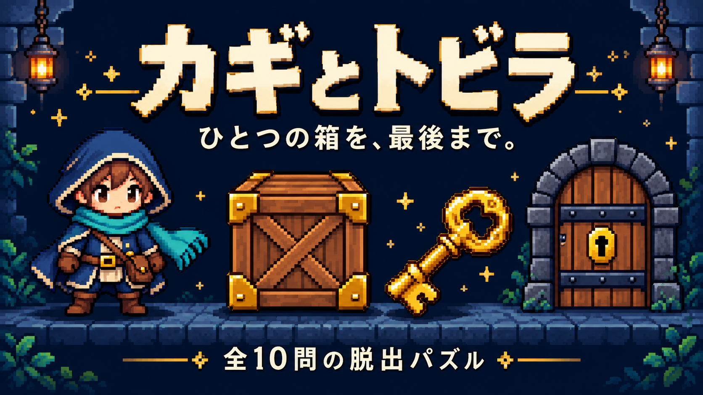

PUZZLE / 第1章MADE BY SHU3
思いついたら、
つくってみる。
ちょっと遊べるゲームと、日々に役立つ小さな道具。
ブラウザでそのまま試せる作品を、少しずつ増やしています。
道具箱は、これから。
便利ツールができたら、ここに追加していきます。
MADE BY SHU3
ちょっと遊べるゲームと、日々に役立つ小さな道具。
ブラウザでそのまま試せる作品を、少しずつ増やしています。

PUZZLE / 第1章便利ツールができたら、ここに追加していきます。